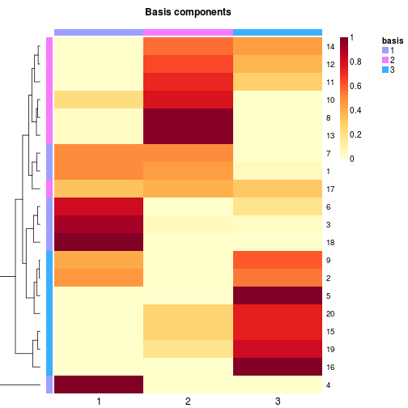
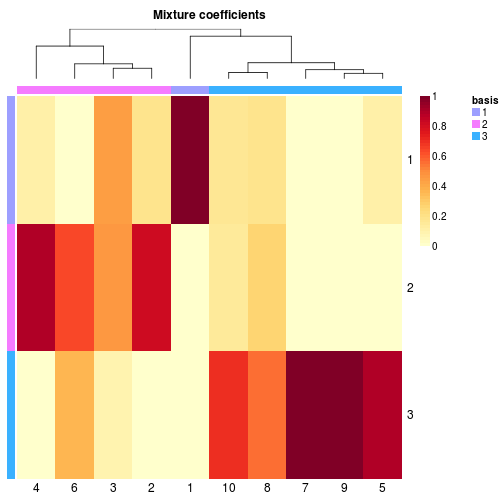

basismap(object, ...) S4 (NMF) `basismap`(object, color = "YlOrRd:50", ..., scale = "r1", Rowv = TRUE, Colv = NA, subsetRow = FALSE, annRow = NA, annCol = NA, tracks = "basis", main = "Basis components", info = FALSE) coefmap(object, ...) S4 (NMF) `coefmap`(object, color = "YlOrRd:50", ..., scale = "c1", Rowv = NA, Colv = TRUE, annRow = NA, annCol = NA, tracks = "basis", main = "Mixture coefficients", info = FALSE) consensusmap(object, ...) S4 (NMFfitX) `consensusmap`(object, ..., annRow = NA, annCol = NA, tracks = c("basis:", "consensus:"), main = "Consensus matrix", info = FALSE) S4 (matrix) `consensusmap`(object, color = "-RdYlBu", ..., distfun = function(x) as.dist(1 - x), hclustfun = "average", Rowv = TRUE, Colv = "Rowv", main = if (is.null(nr) || nr > 1) "Consensus matrix" else "Connectiviy matrix", info = FALSE) S4 (NMFfitX) `coefmap`(object, ..., Colv = TRUE, annRow = NA, annCol = NA, tracks = c("basis", "consensus:"))
aheatmap.FALSE (default), all rows are used. Besides the
values supported by argument subsetRow of
aheatmap, other possible values are:
TRUE: only the rows that are
basis-specific are used. The default selection method is
from KimH2007. This is equivalent to
subsetRow='kim'.
character string or numeric value
that specifies the method to use to select the
basis-specific rows, that should appear in the heatmap
(cf. argument method for function
extractFeatures).
Note extractFeatures is called with
argument nodups=TRUE, so that features that are
selected for multiple components only appear once. basismap (resp. coefmap). In
basismap (resp. coefmap), adding a track
':basis' to annCol (resp. annRow)
makes the column (resp. row) corresponding to the
component being also highlited using the mathcing
colours. TRUE then the name of the algorithm
that fitted the NMF model is displayed at the bottom of
the plot, if available. Other wise it is passed as is to
aheatmap.rev(sequential_hcl(2, h = x, l =
c(50, 95))). Other values are concatenated with the grey
colour '#F1F1F1'. "row": center and standardize each row separately
to row Z-scores "column": center and
standardize each column separately to column Z-scores
"r1": scale each row to sum up to one "c1": scale each column to sum up to one "none": no scaling TRUE or NULL (to be
consistent with heatmap): compute a
dendrogram from hierarchical clustering using the
distance and clustering methods distfun and
hclustfun.
NA: disable any ordering. In this case, and
if not otherwise specified with argument
revC=FALSE, the heatmap shows the input matrix
with the rows in their original order, with the first row
on top to the last row at the bottom. Note that this
differ from the behaviour or heatmap, but
seemed to be a more sensible choice when vizualizing a
matrix without reordering.
nrow(x)), that specifies the row
order. As in the case Rowv=NA, the ordered matrix
is shown first row on top, last row at the bottom.
distfun, hclustfun
and reorderfun when clustering the rows (see the
respective argument descriptions for a list of accepted
values). If Rowv has no names, then the first
element is used for distfun, the second (if
present) is used for hclustfun, and the third (if
present) is used for reorderfun.
d by
reorderfun(d, Rowv).
FALSE: the dendrogram is computed
using methods distfun, hclustfun, and
reorderfun but is not shown.
treeheight. Rowv
(modulo the expected length for vector specifications),
and allow specifying the
distance/clustering/ordering/display parameters to be
used for the columns only. Colv may also be
set to "Rowv", in which case the dendrogram or
ordering specifications applied to the rows are also
applied to the columns. Note that this is allowed only
for square input matrices, and that the row ordering is
in this case by default reversed (revC=TRUE) to
obtain the diagonal in the standard way (from top-left to
bottom-right). See argument Rowv for other
possible values.annCol apply.ExpressionSet
object, in which case the phenotypic data is used
(pData(eset)). Character or integer vectors are
converted and displayed as factors. Unnamed tracks are
internally renamed into Xi, with i being
incremented for each unamed track, across both column and
row annotation tracks. For each track, if no
corresponding colour is specified in argument
annColors, a palette or a ramp is automatically
computed and named after the track's name.The NMF package ships an advanced heatmap engine
implemented by the function aheatmap. Some
convenience heatmap functions have been implemented for
NMF models, which redefine default values for some of the
arguments of aheatmap, hence tuning the
output specifically for NMF models.
basimap draws an annotated heatmap of the basis
matrix.
coefmap draws an annotated heatmap of the
coefficient matrix.
consensusmap plots heatmaps of consensus matrices.
basimap default values for the following arguments
of aheatmap:
scale='r1'); subsetRow, that are
passed to extractFeatures. See argument
description here and therein. This track is specified in argument tracks (see
its argument description). By default, a matching column
annotation track is also displayed, but may be disabled
using tracks=':basis'.
object is a fitted NMF
model. coefmap redefines default values for the following
arguments of aheatmap:
scale='c1'); This track is specified in argument tracks (see
its argument description). By default, a matching row
annotation track is also displayed, but can be disabled
using tracks='basis:'.
object is a fitted NMF model. consensusmap redefines default values for the
following arguments of aheatmap:
'basis:' and
'consensus:', that show, for each column (i.e.
each sample), the dominant basis component in the best
fit and the hierarchical clustering of the consensus
matrix respectively (using 1-consensus as distance and
average linkage).
These tracks are specified in argument tracks,
which behaves as in basismap.
object is a fitted NMF model.
basismapsignature(object = "NMF"): Plots a
heatmap of the basis matrix of the NMF model
object. This method also works for fitted NMF
models (i.e. NMFfit objects).
basismapsignature(object = "NMFfitX"):
Plots a heatmap of the basis matrix of the best fit in
object.
coefmapsignature(object = "NMF"): The
default method for NMF objects has special default values
for some arguments of aheatmap (see
argument description).
coefmapsignature(object = "NMFfitX"):
Plots a heatmap of the coefficient matrix of the best fit
in object.
This method adds:
'consensus:', that shows the consensus cluster
associated to each sample. 'consensus' (or 'cmap') that can be passed
to argument Colv and orders the columns using the
hierarchical clustering of the consensus matrix with
average linkage, as returned by
consensushc(object). This is also the
ordering that is used by default for the heatmap of the
consensus matrix as ploted by consensusmap.
consensusmapsignature(object = "NMFfitX"):
Plots a heatmap of the consensus matrix obtained when
fitting an NMF model with multiple runs.
consensusmapsignature(object = "NMF"):
Plots a heatmap of the connectivity matrix of an NMF
model.
consensusmapsignature(object = "matrix"):
Main method that redefines default values for arguments
of aheatmap.
## More examples are provided in demo `heatmaps`## Not run:# demo(heatmaps)# ## End(Not run)### random data with underlying NMF model# estimate a model# show basis matrix
## Not run:# # without the default annotation tracks# basismap(x, tracks=NA)# ## End(Not run)# coefficient matrix
## Not run:# # without the default annotation tracks# coefmap(x, tracks=NA)# ## End(Not run)## Not run:# res <- nmf(x, 3, nrun=3)# consensusmap(res)# ## End(Not run)